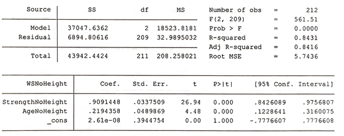
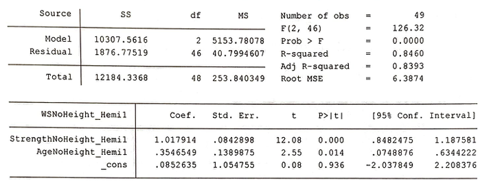
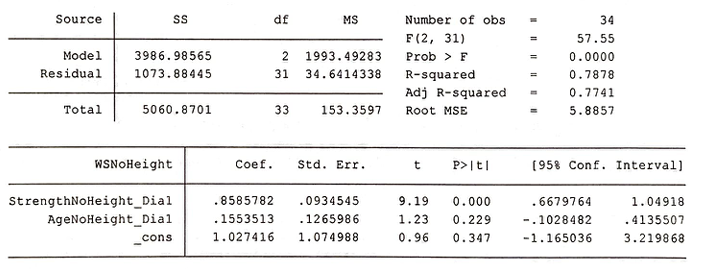
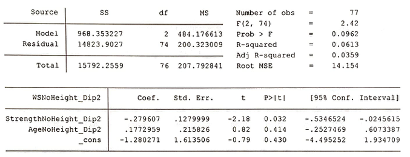
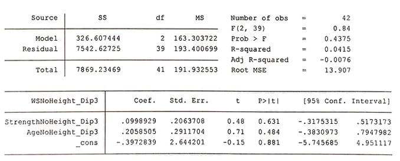

Strength Training as Treatment for Cerebral Palsy
Gait analysis of children with cerebral palsy and the relationship between lower-body strength and walking speed.
Summary
Cerebral palsy (henceforth "CP") is a non-progressive neurological disorder that primarily affects body movement and muscle coordination. Approximately two out of every thousand newborn children develop CP and to this date, there is no cure. This report discusses the relationship between the lower-body strength of the child with CP and their walking speed. As the risk involved with the strength-training treatment is low if not non-existent with proper care, even the slightest positive significant correlation should suggest the value of strength training.
Based on the study, there appears to be a strong relationship between strength and walking speed. This holds especially for those with Gross Motor Function Classification System (henceforth "GMFCS") Level 1, whether the CP is diplegic or hemiplegic. However, the strength of the relationship decays drastically for increasing GMFCS Levels. For those with GMFCS Levels of 3 or higher, possible benefits of the strength training appears to be negligible.
Introduction
Prof. Mark Conaway (henceforth "Client") requested that two questions be answered:
- Is there a [significant] relationship between strength and walking speed, with/without adjustment for height, weight, and/or BMI?
- Does the strength of this association depend on the severity of the type of CP?
Additionally, the Client also requested that secondary question be looked into:- Generally, a walking speed of 80 is considered 'adequate for community dwelling'. Is there an association between adequate walking speed and strength, and does this association depend on the type and severity of CP?
These questions are appropriate for the Client's best interests regarding the Client's current data and future goals of possibly implementing strength training exercises for children suffering from CP. Thus, the objectives of the current report will be on addressing those questions in detail in hopes of benefitting the Client the children.
As both the data and the objectives are straightforward, simple yet enlightening measures such as linear regression and various regression analysis appear to be the most adequate for the Client's current and possible concerns.
Approaches
An important step in the analysis was the engineering of the variables being considered. Factors that may carry a strong significance in both walking speed and strength, such as height and BMI, are eliminated by regressing strength and walking speed on influential variables, followed by regressing strength on walking speed. This effectively removes the variables that may cause multicollinearity. Then, the variables were grouped and sorted to analyze the relationship with GMFCS Level in mind.
Initially, strength was regressed on walking speed without any adjustments. Then, both variables were later regressed independently on height and BMI to remove those variables that are in play. Later, the age variable (adjusted for height and BMI) also found to hold significance. Thus, the final general regression was strength and age on walking speed, all variables adjusted for height.
For the second part of the main question, 4 separate groups were considered. Namely, GMFCS Level 1 with Hemiplegia (both left side or right side), GMFCS Level 1 with Diplegia, GMFCS Level 2 with Diplegia, and GMFCS Level 3 with Diplegia. Hemiplegia at GMFCS Levels 2 and 3 was too infrequent for that conclusion to be significant.
Results
Initial regression of strength to walking speed held no observable strong relationship. However, by eliminating the effects that height had on both of the variables, a solid relationship appears.1, 2
1) WSNoHeight = Walking speed without height
2) StrengthNoHeight = Strength without height
Age, in combination with strength, also suggests a significant relationship.3
3) AgeNoHeight = Age without height
Then, the children are stratified by GMFCS Levels and the condition (diplegia vs hemiplegia).
GMFCS Level 1 - Hemiplegia:
The relationship between strength (as well as age) on walking speed is strong.
GMFCS Level 1 - Diplegia:
The relationship between strength (as well as age) on walking speed is strong.
GMFCS Level 2 - Diplegia:
The relationship between strength (as well as age) on walking speed is strong but begins to drop in comparison to GMFCS Level 1. Also note that while the data for GMFCS Level 2 - Hemiplegia were insufficient, evidence suggests that they will also benefit from the strength training program.
GMFCS Level 3 - Diplegia:
The relationship between strength (as well as age) on walking speed is no longer strong, there is little evidence that strength will assist the walking speed of those with GMFCS Level 3 CP. It is worth noting that the time spent on strength-training treatment is not recorded. Thus, it is impossible to know whether or not if the treatment would have shown more results with more time. All that is known is that the treatment administered was not enough to show statistically significant results.
Conclusion
Two of the major concerns regarding the data on children with CP were adequately addressed. While bias may be present, the strong results suggest that those biases are negligible. The regressions show that there exists a strong relationship between strength and walking speed overall. Also, the GMFCS Level, as expected, played a huge impact. The relationship quickly weakened with each GMFCS Level, and data suggests that there is little evidence that those with GMFCS Level of 3 or higher are likely to benefit from strength training.
The dataset for the current report could be improved through more rigorous data on areas of muscle and more specific information, such as leg length instead of standing height and time spent on treatment to track ongoing progress. The major concerns of bias were the lack of random selection and the focused region that the data was collected.
Construction of a strength training treatment for children suffering from CP with a GMFCS Level of 1 or 2 is recommended.